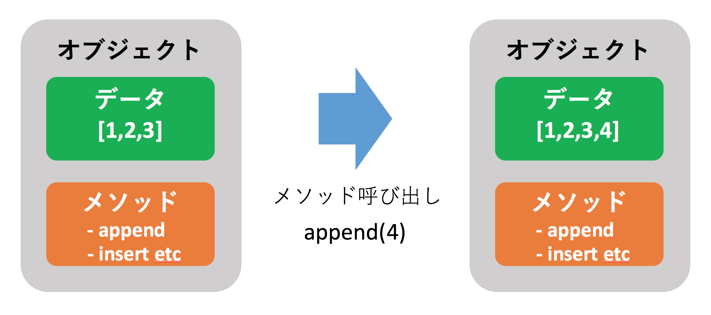

オブジェクト指向を体験
本記事の内容
概要
オブジェクト指向について理解するには、 オブジェクトが持つ「状態」と「処理」がどのようなものか理解することが必要です。 このページでは既存のリストという型を使って、それらがどのようなものか体験してもらいます。
「状態」と「処理」の関係をなんとなく把握したうえで、 次ページ以降で学ぶ「クラス」を使ってオブジェクト指向に沿ったプログラムを書けば、 オブジェクト指向について理解が深まります。
リストで学ぶオブジェクト指向
オブジェクト指向の難しい話をしたり、いきなり文法を教えたりしても頭にはすっと入ってこないと思います。 そのため、まずは難しい話は抜きにしてリストという型を使って「オブジェクト」の扱いに慣れ親しんでもらいたいと思います。
既にご存知かと思いますが、リストは型の一つであり、内部に複数のデータをリスト形式で持ちます。 例えば、以下は全てリスト型のデータです。
[] [1,2,3] ['hello','python'] [1,'python',3]
リストは「型」であり、上記はその「データ」です。リストは「概念」で「1,2,3 という数字が格納されたリストのデータ」は具体的なモノです。 オブジェクト指向におけるこの「概念のレベルでのデータ」がクラスであり、その具体的なモノがオブジェクトと呼ばれています。 例えばクラスとオブジェクトの関係は以下のようなものとなります。
- 整数型がクラスであり、1,2,3 はオブジェクト
- 文字列型がクラスであり、’hello’, ‘python’ はオブジェクト
- リストがクラスであり、[],[1,2,3],[“hello”,”python”] はオブジェクト
上記の例だけを見るとオブジェクトはつまり「具体的なデータ」のように思えますが、実はそうではありません。 データに加えて「処理」も含んでいます。 たとえば、「リスト末尾に要素を追加」することを思い浮かべて下さい。[1,2,3] に 4 を追加して [1,2,3,4] とするには、 以下のように [1,2,3] というリストのオブジェクトに対して追加処理を「メソッド」として呼び出します。
a = [1,2,3] print(a) # [1, 2, 3] # Listオブジェクト a のメソッド呼び出し a.append(4) # オブジェクト自体が変更されている print(a) # [1, 2, 3, 4]
上記のサンプルプログラムは [1,2,3] というリストのオブジェクトがデータだけでなく append という処理(メソッド)も持っていて、 それを使うことで自分自身のデータを更新しています。 [1,2,3] というオブジェクトが変数 a に代入された時点では [1,2,3] のままですが、 append メソッドを呼び出した呼び出した後は[1,2,3,4]となっていることが分かります。 オブジェクトが「データ」と「処理」の両方を持つということを理解できましたでしょうか。 以下に上記の変化を示す図を記載します。

以上でリストを使った簡単なオブジェクト指向の体験は終了です。 最後にオブジェクトの詳細を知るのに便利な関数である dir() を紹介します。 例えばプログラムを書いていると「リスト型がどういう名前のメソッドを持っているか」ということを確認する必要がある場合が出てきます。 dir 関数にオブジェクトを与えると、そのオブジェクトがどのような属性を持つかリスト形式で返してくれます。
$ python3 >>> a = [1,2,3] >>> dir(a) ['__add__', '__class__', '__contains__', '__delattr__', '__delitem__', '__dir__', '__doc__', '__eq__', '__format__', '__ge__', '__getattribute__', '__getitem__', '__gt__', '__hash__', '__iadd__', '__imul__', '__init__', '__iter__', '__le__', '__len__', '__lt__', '__mul__', '__ne__', '__new__', '__reduce__', '__reduce_ex__', '__repr__', '__reversed__', '__rmul__', '__setattr__', '__setitem__', '__sizeof__', '__str__', '__subclasshook__', 'append', 'clear', 'copy', 'count', 'extend', 'index', 'insert', 'pop', 'remove', 'reverse', 'sort']
「あの処理をしたいのだけど、どういう名前だったかな」といった感じで忘れしまったメソッドを確認したり、 「あの処理をしたいのだけど、なにかそれっぽいものはあるかな」といったこと調べたりするのに便利です。
dir に加えて help 関数を使うと、属性のより詳細を調べることもできます。 たとえばリストの pop メソッドがどういうものか調べたければ以下のようにします。
>>> help(a.pop)
Help on built-in function pop:
pop(...) method of builtins.list instance
L.pop([index]) -> item -- remove and return item at index (default last).
Raises IndexError if list is empty or index is out of range.
上記のヘルプを使うことでメソッドの挙動がわかります。 少し慣れが必要ですが、いちいち本で調べたりGoogle で検索したりするより、 上記のようにインタプリタを使ってその場でどういう属性を持つか調べるほうがはやいので積極的に使ってみて下さい。
本書の大まかな構成
簡単に今後の流れについて説明します。 本章の構成は大まかに3つに分かれており、以下のように進めます。
- オブジェクト指向の基礎
- オブジェクト指向をどう使うか(設計)
- 継承やその他高度な話題
- 例外処理
それぞれのトピックは単なる文法的な話だけではなく、「なぜそうなっているのか」「どう使うのがいいのか」といった一歩踏み込んだ解説をしています。 読者のレベルによっては一部難しい箇所があるかもしれませんが、その場合はそれらの章を飛ばして後でまた読みなおしてみてください。 また、オブジェクト指向を有効に使うためには「関数型」と呼ばれる別のパラダイムについても知ってもらう必要があるため、 オブジェクト指向の中盤に1章を割いて Python の関数型について説明しています。
サンプルプログラムについて
本書のサンプルプログラムは出力をコメントとして記載しています。 例えば以下のコードがあるとします。
print(5 + 5) print(5 - 2)
これを実行すると以下のような出力が得られます。
$ python3 test.py 10 3
上記のプログラムは出力も加味して以下のように記載することになります。
print(5 + 5) # 10 print(5 - 2) # 3
また本書はPython速習シリーズの中編であるため、前編で扱った内容は知っていることを前提に書かかれています。 前書は入門レベルの書籍であったため一部を除いて特に難しいことは扱っていませんが、本書では以下の文字列の format メソッドを多用するため挙動を紹介しておきます。
a = '{} {}'.format('hello', 'python') print(a) # hello python
上記のサンプルを見て分かるように文字列のformat メソッドはその内部にある中括弧{}に format メソッドの引数を埋め込んだ文字列を返します。 本書では上記以上の高度な使い方はしませんが、前編では format メソッドの詳細を扱っています。ご興味があるかたはご一読願います。
 印刷する
印刷する